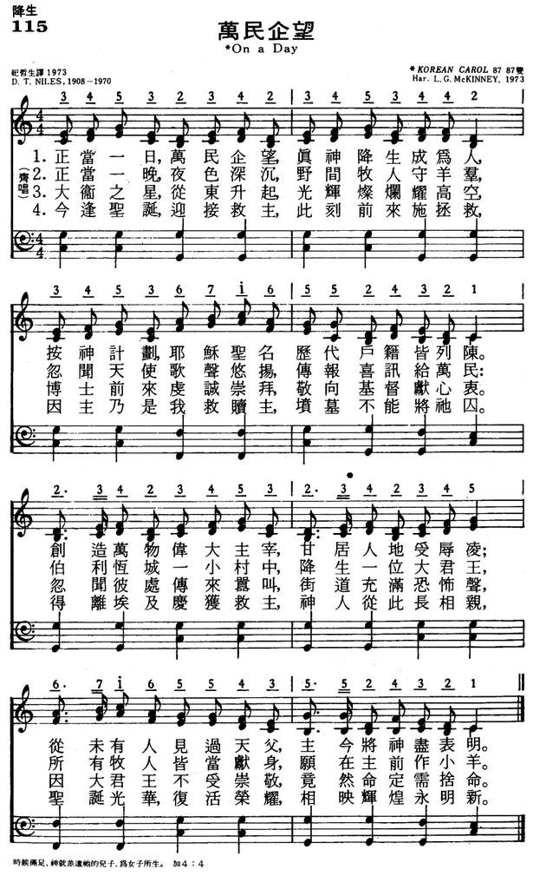

|
|
颂主新歌 |
|
Representative Text 1. On a day when men were counted, God became the Son of Man, That His name in every census should be entered was His plan. God, the Lord of all creation, humbly takes a creature’s place; He whose form no man has witnessed has today a human face. 2. On a night, while silent shepherds watched their flocks upon the plain, Came a message with its summons brought by song of angel train: Lo, in Bethlehem’s little village has arrived the shepherd King, And each shepherd to his Master must his sheep as offering bring. 3. When there shone the star of David in the spangled eastern sky, Kings arrived to pay their homage to the Christ, the Lord most high. Yet not all, for lo, there soundeth through the streets a fearful cry; For a king who will not worship has decreed that Christ must die. 4. Yet it’s Christmas, and we greet Him, coming even now to save; For the Lord of our salvation was not captive to the grave. Out of Egypt came the Savior, man’s Immanuel to be— Christmas shines with Easter glory, glory of eternity. Source: The Cyber Hymnal #4779 |
1.正当一日，万民企望，真神降生成为人， |
|
https://www.mred365.cn/szxg/7118.html 
|
|
|
|
|

LX1817
On A Day
115万民企望
[亞印]
ON A DAY
0115(萬民企望)
D. T. Niles. (Daniel
Thambyrajah), 1908-1970 1970
**
調名:
Tune:
KOREA (34532)
On a day when men were counted
| Text: | On a Day When Men Were Counted |
| Author: | Daniel T. Niles, 1908-1970 |
| Tune: | KOREA |
| Media: | MIDI file |

{kind=link}